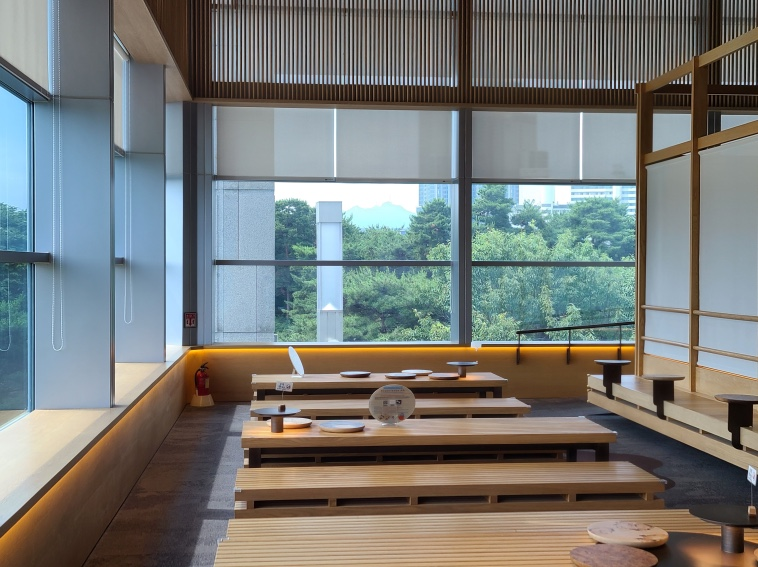

소개
- 
역사와 문화가 살아 숨 쉬고,과거와 현재, 미래가 공존하는 감동의
공간인 국립중앙 박물관에 오신 것을 환영합니다.
시대와 주제별로 제시된 6개의 상설전시관, 다양한 내용을 선보이는 특별전시관,
관람의 이해를 돕는 전시해설 프로그램, 오감으로 즐기고 배우는 어린이박물관,
다채로운 교육 프로그램, 첨단기술을 활용한 실감콘텐츠 등을 마음껏 누리고 즐기실 수 있습니다.
국립중앙박물관 전시실에는 아주 먼 옛날부터 가까운 옛날에 이르기까지 그리고
세계 유산을 포함하여 수많은 사람들이 남긴 발자취와 전통이 여러분을 기다리고 있습니다.